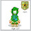
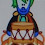
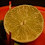
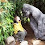
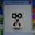
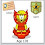
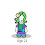
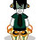

Hey Chobots,
Meet my new puzzle! :) It is very simple, just tell me what is shown on these pictures.

 And what unites these pictures?
And what unites these pictures?Hiki will grant the winners with 1 month citizen passes. Good luck Chobots!
Vayerman | Chobots Guru
And what unites these pictures?
-2.jpg)


138 comments:
1:first one is a picture how it was born you can see a person holding a little egg and on the picture its shoves you what does it look likke when its out og the egg
2:the second one is a picture of a place that looks like a waterfall and with snow
first 1 is a caccoon
second 1 is a waterfall thats frozen
-preston12
the first one is a worm going in a egg and evolving into a butterfly its a butterfly cycle
The first one shows how the catipiller was born the second one Looks sorts like a waterfall cliff thing thats frozen.
second one is a glaciar thats frozen
the first one is a catepilar in a cacoon and the second one is a frozen water fall (plz be right)
the first one is a insect which has born and the man is holding the egg of that insect and the the second one is a waterfall which is frozen also it has fresh water pools.-omarstar
1 picture is:
Its Butterflys cacuun ;D
Its shows how it looks inside and how il looks when he is at cacoon;D
2 one:
its in antartica an old Stone home???
Or waterfall;D
wow the 1st 1 is a cattipiller comeing out of its cacone (bad spelling:( ) and the the person is holding the/an egg
pic #2 look like its in antartica with water in thoes little holes it kind looks like thoes really preatty pools of water,like the 1's at the grand canyon or the park with old faith ful, but there Super hot. or i might b a frozen water fall lol. hope i winn!!! plz check chobotsdueo.blogspot.com!!!! thx!!!!!!:)
1. A catapiilar in a eye glass box
2. A desert with sand on rocks
Im Chobot_vayerman on chobots

WOW O_O...
1.it shows the phases of how a pupa becomes a butterfly. it shoes all the phases of this butterfly
2. it shows how water from a water fall turns into ice.
they unite because they both show changes and phares that things have to pass through to show something else. they both pass through phases that allows them to change.
thats :)
elise__23
The first one:is a catepillers egg or a butterfly inside the egg.
the second one:is little ice rinks for elfs in christmas.
My chobot name is chanyboy.
(with the y
its a caterpillar being born and ice water flowing i think... and life unites them because without water there isnt life or birth
-mcho04
Ooh is the caterpillar in metamorphises that goes with my other answer kinda lol :P
-Mcho04
The first is a silk worm in its cocoon that the boy is holding and the picture of what the silkwrom looks like close up in cocoon. The second is a frozen waterfall or glacier. The only thing i can thing of to unite them is there sort of both white also they change and go through phases and are on the move.
-ninja_chobot

1. 1 is a cacoon kind of thing with a man with an egg
2.is a frozen water fall thing with little bits of water
1.it shows the phases of how a pupa(cocuum) becomes a butterfly. it shoes all the phases of a butterfly in the picature. :)
2. it shows how water from a water fall turns into ice in the picture. :)
they unite because they both show changes and phares that things have to pass through to show something else. they both pass through phases that allows them to change.
thats :)
elise__23
Or its waterfall what have beed frozen in Some cold place ;D
and then with times when water have been Frozen so Froze even Rocks and they can broken:)
thats how its so pretty;D
first butter fly
second snow
my name is zizo12
first:
is a caccoon which is what catapillas come out of thats the animal in the picutre
sencond:
Frozen water fall
1st is a catipla from its thing before becoing a butfly on a x ray behind and in the north pole or south ploe the 2nd is my chobots name nuwfall9
and how they connect in pic 1 first its caterpillar then butterfly in pic 2 first its water then ice kinda
1. making a new live to earth
2. a water fall turning in to a kind of like ice ring
- icarly_rules
I get it now! Finally! They are both evolutions like from something to another! Phew!
1. The first ones Catapillar to Butterfly. It Shows the cacoon because thats how the catapillar turns into the butterfly, inside the cacoon. It's hard to explain.
2. Water to Ice. It shows how water freezes and then turns into ice. Most of it is ice, the little water there hasn't froze into ice yet.
Finally I get it!
~kymaster =D
1.picture of a month and a mothball
2.frozen cold place
3.what unites them is that when its cold ppl use moth balls to keep moths away
if i win i want to give my prize to pendul 1 or i want a v flag
The 1st picture looks like the larvae of a Beetle called the Widgety Grub, coming out of its cocoon and the 2nd picture is a frozen waterfall, Maybe the connection is that it was found frozen and preserved in the ice?
1. alarva and your holding some type of egg
2nd.a ice age or some frozen place
shasta6193
first its caccon second its snow wich has benned iced
first its caccon second its snow wich has benned iced
first its caccon second its snow wich has benned iced
the first is a HUGE caterpiller in its (cacoon)-silk and someone holding an egg and the man is holding a butterfly egg the second is simply a clif with ice/sand covering it
the first one is a worm going in a egg and evolving into a butterfly its a butterfly cycle
first one is a type of pillar catterpilla or something like that
second one is in north pole with ice bergs broken apart
It's Caccoon and a Frozen Waterfall. The thing that unites them is that they are trapped in a coating. If I win give the membership to Dyer56
Hi! 1.Hand holding a coccoon and showing a silkworm
2.frozen river or rappids
by speed
1.picture of a month and a mothball
2.frozen cold place
3.what unites them is that when its cold ppl use moth balls to keep moths away
if i win i want to give my prize to pendul 1 or i want a v flag
sooo simple!
1st) it's a caccoon, or a caterpillar with must get out of that and be a butterfly
2nd) i don't think fif that's a fromzens waterfall. i think is a place somewhere in the antactica or somewhere in the winter season. cuz the frozen waterfall can't be coloured. some ice or something frozen...ice!
hope i win cuz i can't pay membership from my country~
~~aqua_bubble~~
if i win can i have a v flag
umm let me see....i think the catapilluar thing lived in that now frozen over waterfall and when people came they found him in a block of ice then scientists found out and put him in a musium and when they searched the area where they found him they either saw that one egg belonging to that creature or they found a buch of eggs and only that one survived the harsh cold.
oh and you said how are they united which i think means connected so another guess they both have white in the picture. lol just guessing
amber780
1 is a cocoon with a caterpillar in it ans a small egg
2 is a frozen waterfall
and i think what unites them is that the caterpillar is frozen in time in the cocoon and the waterfall is frozen
im nokia7788 its a white cucoon and a wite catipeler and a wite ice berge the all 3 wite pls i did so reserch hikik you rule
1.) The first one is either a meal worm or a catapillar egg.
2.) The second one is a frozen body of water.
If i win can the citizenship be givin to my brother's account? His username is _cameron_
1. A caccoon
2. Icicles..
The thing that unites these pictues is when Hanging, the caccoon looks like these frozen icicles!
The first is a photo of a creature found in an icy cold environment and what its eggs look like, the second is the environment of witch the creature lives in.
And my chobots name is jes00
First pic: An egg(or cocoon)
Second pic: an glacier
Ice_dog
a cocoon of a silk worm!
ice_dog
second pic a iceberg
Ice_berg
ups!
ice_dog
1st is a catipiller in a egg
2nd Is the Cascade Mountains or the Cascade Caves (My name is plunder on chobots
The first one is things being born. The second one is the habitat. The thing that connects them is the life of the creatures.
their both from somewhere in the arctic.
amber780
first pictrue is a snail and seccound is a polar bair snow place -secret_acc and block_party(both diff accounts but same person and theese r chobots usernames)
The first picture is larva and it will be a Butterfly
And second picture is Frozen Waterfall
Chobots Name: Mrmahmoud11
here are my answers
1) The first picture shows how a cocoon evolves into a caterpillar.
2) the second picture shows how a rock changes or evolves into limestone (many might think its frozen water) this location is called the PAMUKKARE ( A world attraction in turkey)
Both pictures are united because they both show how things and nature changes over time, cocoon changes into caterpillar and rock changes to limestone :)
I hope i am right
~kingsonnest~

I see... The unite of the picture is The Artic.
( cold )
- 4848yes
the first one is a catapriler
when the cacoon is open
and a guy holding a egg
the second on looks like frozen water fall covered with snow and ice
yoshi849
go to chopowgang.blogspot.com
UPDATED
in Turkish its called PAMUKKARE but in English its called PAMUKKALE, its a location in Turkey famous for Hot springs (i love hot springs) :)
1st one is a lung 2nd is antracia
The first one is a frozen cocoon. And the second one is a frozen mountain. The thing that connects them is that the cocoon was frozen in an icicle on the mountain.
1's is a Caterpillar coming out of it's egg and the person is holding the egg in front of the picture
2 It's an arctic frozen waterfall with snow surrounding it
First 1 is a caccoon
2nd one looks like its the antartica where everything has frozen
1. pic: caterpillar cocoon
2. pic: Pamukkale in Turkey (lime waterfall)
both picutes united that a cocoon is made of silk and Pamukkale is the cotton stronghold
UPDATED
here are my answers
1) The first picture shows how a cocoon evolves into a caterpillar.
2) the second picture shows how a water changes, evolves and forms limestone through the settlement of calcium (many might think its frozen water) this location is called the PAMUKKARE ( A world attraction in turkey)
Both pictures are united because they both show how things and nature changes over time, cocoon changes into caterpillar and water changes to limestone :)
I hope i am right
1: is a picture magnified of a cutworm moth in its cocoon.
2: is the cutworm moths habitat
first one is a cacoon and a man holding an egg
second is a frozen waterfall in ice
The first shows a maginification of a caterpillar in its cocoon (its probably a silk worm)
The second shows Pamukkale (which means "cotton castle"), a popular attraction in Turkey. They are formed by the warm springs, at a temperature of 33 degrees Centigrade and containing calcium bicarbonate. The waters flow out of the terrace at various points. The deposits are formed when the water loses its carbon dioxide while cooling down and the limestone, or calcium carbonate, is deposited in various shapes and forms a complex system of basins, gutters, overhanging surfaces and beard-like stalactite formations.
I think they are united because they both show how things can change from one thing into a completely dfferent object.
Another way in which they are united is that they both create overhangs when they evolve. (The cocoon hangs from the branch while the limestone hangs from the cliff.)
If i am right plz give the prize to my chobot dpart544
Oh and the frist one also shows a man holding the cocoon
dpart544
um ice worm? i gusses
iceblock9
1st Picture is a cattapilla in a cucoon.
2nd picture is a waterfall tthat has frozen in winter.
Juicyqueen
ok the first pic is of an x-ray of a silk worm in a cocoon and the person is holding the cocoon up.
the second pic is of a scene in winter.
these pics are related because both of them are 1) white and 2) they will become a pretty thing (the worm will be a moth and the snow will melt and be a pretty waterfall again!)
-uspinmyhead
first one is a picture of this bug i dont know whats it called but hes going out of the caccoon hes going to be butterfly soon and the second one is the waterfall and the land frozen.
1 picture. well in my country we call those Silkworms and from their cacoon we make clothes :)
2 picture. hmm maybe a small iced waterfall
1. is a caccoon
2. are the mountains from Turkey that are called Pamukale
XD
Pendul1
first one is a caterpiller cacoon
second pic is a frozen waterfall
a little edit to my post before:
the unity of the pics is not only what i wrote in my first comment.
if its really the unity of cotton and silk - the unity is u can make clothes of both and wear it
1.I think the first one is a man holding a caccoon and on the picture (behing the man) is shown whats inside it. 2.I think its a frozen river or waterfall. chobots name :tovictory
a thing in a cocon!
the first one is a cocoon with a catipiller in it.
the second one is a glacier
the thing that unites the catpiller and the glacier is the word time. the catipiller takes TIME to form into a butterfly. The glacier takes TIME to move. So they are both united by time.
The first picture is a gianormo Catterpillar in a cacoon with a persons hand holding a tiny egg...
The second picture is a frozen waterfall or a glacier... LOL
this is a hard 1!
-Julz
the first one, is an insect egg a michigan insect eggs, i guess..
the second one is, frozen waterfall snow display, or glaciers
zandercute

ummmmmmmmmmmmmmmmmmmmmmmmmmmmmmm
1st one is a maggot coming out of its cocuon
2nd one is the south pole or greenland because its so cold there
-hotbot2
the first picture is a catipillar being born and the second picture is from the north pole
danshannon12
1st. It looks like a bumble laying an egg!
2nd. Looks like some glaciers or polar ice caps!
:)
~Yolande
the second one shows that when there is snow and ice mixed up thogether in water that makes its ice so whenit is very cold the water turns into ice from the freez

1. is a giant larva 2. is a frozen water rapeddets.
A grub hatching out of a cacoon and snow. the thing that unites them is the color write
1: cacoon
2: umm, frozen falls
UR HAND!!
wow. these look hard. well the first one looks like an egg and a huge worm! the second one looks like an iced water fountain somewhere in antartica. lol those r my two guesses :)
-chill
first pic: is a picture how the catipelar born and a hand with a catipelar's egg
second pic: a frozen water fall.
~complete~
ps:when i will get my prize?
first one is a is a cacoon showing sa bug in it the second one looks like a cave with crystals and waters falls
cool pics!
these r my guesses:
1. in the screen in the picture is a silkworm and in its cocoon and the man is holding an unopened cocoon
2.those r famous natural spas in turkey know as pamukkale or "the cotton castle"
oh and what connects them is the country of turkey!
they are both two different cycles of life
The first picture is a caccoon of a caterpillar. and the second is a frozen waterfall. They are simillar cuz soon they will be re borned into a new form.(Caterpillar turns into butterfly and frozen waterfall starts to run again with the water falling.)
~chobotsrule12345~
1.- butterflys cacoon
2.- are glaciers if they became liquid water some island could get drowned
The first one has a catipiller was being born the second one Looks like a ice cliff thing thats frozen.
-Greenhoodie
The 1st picture I think is a picture of a silk worm that is turning into a cacoon and the 2nd picture is a frozen water fall.
the first is a caterpillar egg
the second is the himilais
and my chobots name is uuffo
The first one is a Caterpiller crysalis
The second one looks like a Tundra ennvironment thingio
1.Cacoon of a catapiller
2.Frozen ice cristles
~Seeker52~
1.Prehistoric cacoon of a catapiller.
2.A frozen invirement full of ice cristle.
~Seeker52~

hi second one is pamukkale, (cotton castle) it is located in turkey
-aqua144
1.(Back round)Open larva egg on a screen.
2.(Front)Man's hand holdind the larva egg itself.
~Seeker52~

the first one is a new hatching silk worm and the second is like at antartica a waterfall frozen
1.(Back round)Open larva egg on a screen.(Front)Man's hand holdind the larva egg itself.
2.Icey envirement slowly turning back into water.
The two things they have in commen is they both have a cycle 1 has a birh cycle and 2 has the water cycle (Sorry for all the other comments but this is my last one because Im shure about this one!)
~Seeker52~
I didnt answer the REAL question so here is my answer
The first one is a Caterpiller cacoon
The second one looks like a Tundra ennvironment thingio or a waterfall that is kidna frozen
The thing that unites them is like the whiteness?
Maybe thats the place whre the soem of the caterpillars change into buterflies?
The cacoon looks like a peice of ice and the environemtn in the second picture is icy and snowy??
Hmm.. Maybe its not a waterfall?? its like silk or something and the caterpiller wraps its self in silk?
Hope i get them correct
1. cacoon of a butterfly
2. a snow mountain located in ukraine
(what i think)
vayerman i got hacked im the real icarly_rules beta135 hacked me band all his account but now im icarly_rules1 the comment that i posted earlyer can i still get to be a citizen
1:the changes of a catipillar into a cacoon and a frozen cliff/waterfall!(the stage from water to ice)(liquid to Solid)
they go together because they both show changes and phases that things have to pass through to show something else. they both pass through phases that allows them to change.
so its like chobots is getting some changes also sorta like new clothes and mod magic(real rain) and the rainbow!!! lol so thats what i think it is
the first one is a butterfull that a person made.
the second one is snow that looks like water fall
~chobottips
1.worm
2.an egg
3.snows
The first pic is a catterpiler in a cacoon and the guy is holding its egg. ITS THE LIFE CYCLE.
The 2 pic is a frozen waterfall.
Probaly the butterfly migrates there
-warm
thats my chobots name
1.worm
2.an egg
3.snows
penguin_223 ;)
iguana eggs, frozen creek falls
zandercute
Pamukkale in Turkey (lime waterfall)
in mountains..
lizard eggs
zandercute
ooh ooh pick me pick me i think i have the anwser!!!the way these two pictures unite is probably cause they cattapiller was born in silk and the other i think is a mountain of silk.i hope im right
ooh ooh pick me pick me i think i have the anwser!!!the way these two pictures unite is probably cause they cattapiller was born in silk and the other i think is a mountain of silk.i hope im right
Like most people, I do think that the connectiong is hat they've both become something diffrent to what they were before. Life.
The pictures are a lavae and Ice in Antartica or something. :P
y_m_i_on_this
white rock falls
zandercute
is the puzzle number two part of the Crimean mountains? with white rocks or snowy rocks..
zandercute
1 is a silk worm
2 is a glacier
iand i forgot i am nuwfalll9 and holding its egg some 1 is
1.life-cycle of a catterpillar
Ummm.... I think it shows how the catterpillar hatches out of the egg then turns into a butterfly....
2. err....
a frozen waterfall?
I think it relates to mountains?
my name is diddle1

the first picture is like a different kind of cacoon or shell and the second one is a snow-covered platform or an old frozen waterfall.
the white outside of the cacoon and the snow make them united and the inside of the cacoon and the frozen waterfall is a surprise...
i'm davidarchuletaai
the first one is a new born baby caterpillar
-pony123
The second picture could be a salt mine.
Comments are preserved read-only.